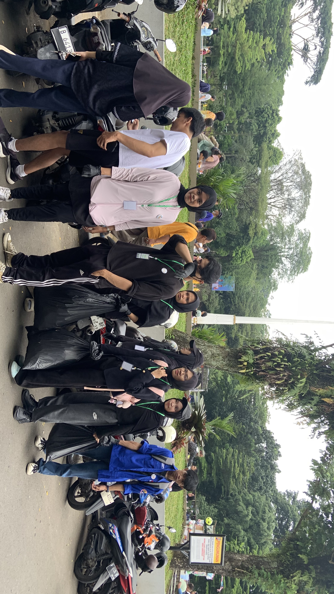
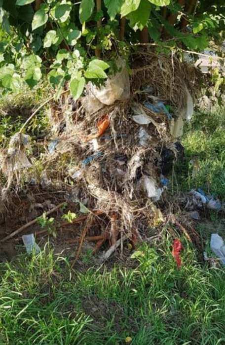
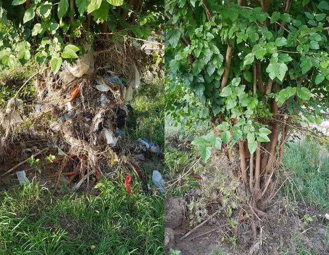
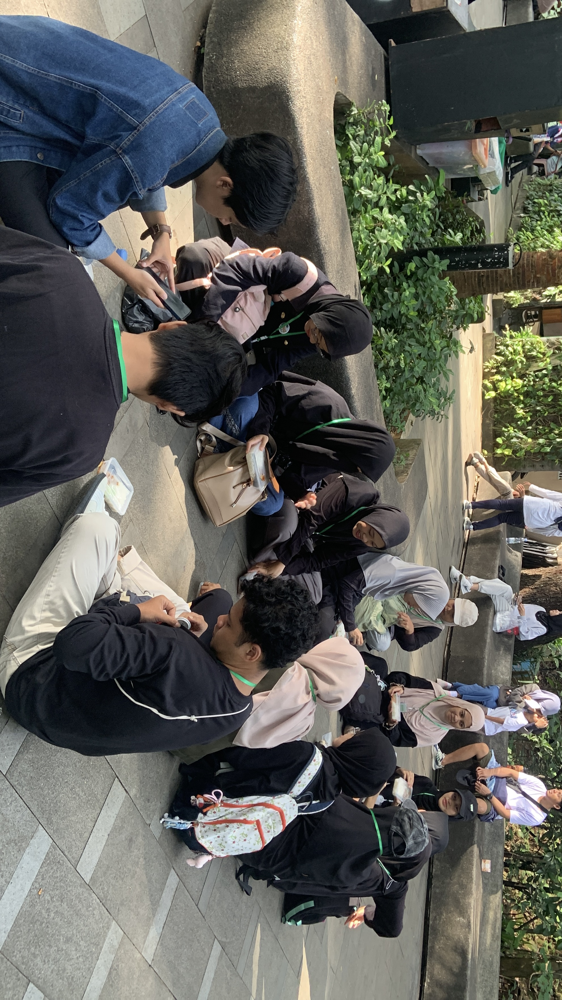
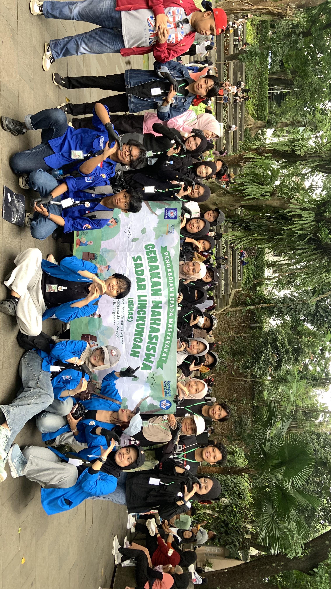

Kota Bersih
Dimulai dari
Kita
ECO-HUB adalah platform digital crowdsourcing yang memangkas birokrasi perizinan, melawan wabah DBD, melahirkan Guardian City, dan mengubah Gen Z menjadi pahlawan lingkungan menuju Indonesia Emas 2045.


Dampak Kumulatif Nasional
Setiap aksi relawan ECO-HUB terhitung secara real-time dan berkontribusi pada angka nasional ini.
Enam Pilar Perubahan ECO-HUB
Setiap fitur dirancang untuk menghancurkan satu hambatan nyata dalam gerakan kebersihan perkotaan Indonesia.
Portal E-Perizinan
Izin kegiatan clean-up selesai dalam hitungan jam. Satu klik persetujuan, QR Code legal langsung di tangan relawan.
Ajukan Izin →Heatmap Real-Time
Peta nyata Bogor dengan titik sampah interaktif. Laporkan, pantau, dan ambil aksi langsung dari peta.
Lihat Peta →Anti-DBD System
Zona risiko nyamuk Aedes aegypti dipetakan. Laporan jentik dari warga diintegrasikan dengan data Puskesmas.
Pelajari →Guardian City
Relawan terpilih menjadi Penjaga Zona resmi per kelurahan. Tanggung jawab, wewenang, dan apresiasi nyata.
Daftar →Super Relawan
Nominasi bulanan. Voting komunitas. Badge eksklusif dan hadiah dari sponsor untuk yang paling berdampak.
Nominasi →Kalkulator Dampak
Setiap aksi terhitung. Portofolio digital siap diunggah ke LinkedIn sebagai bukti kontribusi profesional.
Dashboard →Feed Aksi Nyata
Foto before-after dari komunitas yang sudah bergerak. Setiap post menghasilkan Eco-Points dan menginspirasi yang lain.

SEBELUM
SESUDAHDrainase Jl. Sempur — Bersih!
47 kantong sampah berhasil diangkut. Aliran air kembali lancar. Ini bukan kerja keras biasa — ini masa depan Bogor.
 SEBELUM
SEBELUM
SESUDAHPembersihan Selokan RT 04
3 titik selokan tersumbat berhasil dibersihkan. Warga sekitar ikut bergabung spontan — inilah kekuatan komunitas!
SESUDAHZona Anti-DBD — Taman Utara
Satu zona berhasil dibersihkan dari genangan. Data jentik dilaporkan ke Puskesmas setempat untuk tindak lanjut.
Dari Laporan ke Aksi Nyata
Lima langkah yang mengubah kepedulianmu menjadi dampak terukur dan pengakuan nyata.
Laporkan
Foto titik sampah, GPS otomatis menandai di peta publik.
Ajukan Izin
Form digital 5 menit, izin resmi + QR Code dalam hitungan jam.
Bergerak
Datang ke titik merah dengan panduan K3 digital dan sponsor alat.
Dokumentasi
Foto before-after, upload ke feed, dapatkan Eco-Points otomatis.
Naik Level
Kumpul poin, nominasi Super Relawan, jadi Guardian City.
Taman Sempur — Bukti Pertama
Dalam satu sesi GEMAS 2025, puluhan kantong sampah diangkat dari drainase Jalan Sempur. Di 2026, ini bukan lagi momen spontan — ini sistem yang berkelanjutan dan terukur.
Birokrasi Dipangkas Total
Dari berminggu-minggu menjadi 2-6 jam dengan e-perizinan satu klik
DBD Turun 35%
Drainase bersih = habitat nyamuk Aedes aegypti hancur
Guardian City Lahir
Relawan terpilih jadi penjaga zona resmi per kelurahan
Gen Z Berdaya
Portofolio digital terverifikasi, bernilai di dunia profesional
🦟 Anti-DBD — ECO-HUB vs Aedes aegypti
Setiap drainase yang dibersihkan adalah satu habitat nyamuk yang dihancurkan. ECO-HUB menjadikan ini misi bersama.
Zona Risiko DBD
Peta khusus zona merah risiko tinggi nyamuk, terintegrasi dengan data Puskesmas dan laporan warga.
Laporan Jentik
Warga bisa melaporkan keberadaan jentik nyamuk di genangan. Data langsung masuk ke sistem monitoring Dinkes.
Mitra Puskesmas
Integrasi data kesehatan lingkungan dengan fasilitas kesehatan terdekat untuk respons cepat.
Alert Sistem
Notifikasi otomatis ke relawan Guardian City ketika zona mereka masuk kategori risiko DBD tinggi.
🛡️ Guardian City — Penjaga Zona Resmi
Bukan sekadar relawan biasa. Guardian City adalah relawan terpilih yang mendapatkan tanggung jawab resmi sebagai penjaga kebersihan zona kelurahan mereka — dengan dukungan platform, pemerintah, dan sponsor.
Seleksi Ketat & Transparan
Dipilih berdasarkan Eco-Points, rekam jejak, dan voting komunitas
Akses Dashboard Eksklusif
Pantau zona, terima laporan warga, koordinasi dengan Dinas
Dukungan Sponsor Langsung
Alat kebersihan, seragam, dan insentif dari mitra CSR ECO-HUB
Sertifikat Resmi Pemerintah
Pengakuan legal dari Dinas Lingkungan Hidup Kota Bogor
🛡️ Daftar Guardian City

Aksi Nyata di Lapangan
Bergabung. Bergerak. Berdampak.
Indonesia Emas 2045 dimulai dari satu drainase yang bersih, satu relawan yang berani, satu kota yang peduli. Mulai dari Bogor, menuju Indonesia.